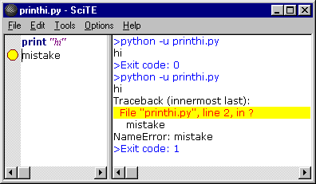

|
SciTE |
| Документация FAQ Регулярные выражения LUA SciTE Director Команды SciTE и Scintilla Сборка Ru-Board Ядро SciTE-Ru История |
Перевод данного документа выполнен с многочисленными авторскими правками.
Текст содержит элементы, выделенные форматированием, например:
Настройки | Консоль – сбоку - команда меню SciTE
command.subsystem: - параметр (переменная) из файла настроек SciTE
windows - значение параметра
"-open:my file.txt" - примеры кода
Данная возможность... - функции, работающие только в Windows
Данная возможность... - функции, работающие только в GTK+
Данная возможность... - функции, имеющиеся только в SciTE-Ru
[т.е. команда будет выполнена...] - примечания переводчика
Дадим определения некоторым специфическим терминам, часто встречающимся в тексте документации:
Лексер (lexer) - программный модуль для анализа и обработки конкретного языка программирования. Лексеры подобны плагинам, и пишутся, в основном, независимыми разработчиками. После компиляции код лексера размещается в файле SciLexer.dll, а все его настройки обычно выносятся в отдельный файл свойств. Процесс добавления нового лексера описан в "Add a lexer to Scintilla and SciTE".
В SciTE редактирование текста осуществляется так же, как в большинстве редакторов Macintosh или Windows. При этом в SciTE добавлена функция автоматической подсветки синтаксиса. В памяти SciTE может одновременно находиться множество файлов, однако на экране будет отображен только один из них. Исходная конфигурация SciTE не разрешает хранить в памяти более одного файла одновременно, однако эту особенность можно обойти, изменив значение свойства buffers. Прямоугольные области текста в SciTE можно выделить с помощью мыши, удерживая при этом клавишу Alt (в Windows) или Ctrl (в GTK+).
SciTE имеет две панели – панель редактирования и панель вывода. Панель вывода находится либо справа от панели редактирования, либо снизу от нее. По умолчанию размер панели вывода равен нулю, однако путем перетаскивания разделителя между двумя панелями его можно увеличить. Для того чтобы поместить панель вывода под панель редактирования, можно использовать команду Настройки | Консоль – сбоку (Options | Vertical Split).
SciTE может исполнять команды для компиляции или запуска редактируемых файлов, перенаправляя вывод этих команд на панель вывода.
К примеру, если на компьютере установлен Python, откройте новый документ и напечатайте там:
print "Hi"
Сохраните документ как printhi.py.
Теперь в документе будет применена подсветка синтаксиса, поскольку SciTE использует расширение файла при выборе стиля его оформления [если задан параметр default.file.ext, то вновь созданный файл будет подсвечиваться и до сохранения, в соответствии с заданным расширением]:
print "hi"
Запустите команду Tools | Выполнить (Tools | Go).
На экране появится панель вывода (если её до этого не было) со следующим текстом:
>python -u printhi.py
hi
>Exit code: 0
В первой синей строке SciTE показывает, какую команду он использовал для запуска программы. Вторая чёрная строка представляет собой результат исполнения программы на Питоне. В последней же синей строке SciTE сообщает о завершении программы и отображает код ее завершения. Если код завершения программы равен нулю, это значит, что исполнение программы прошло успешно.
SciTE отчасти понимает те сообщения об ошибках, которые выдают Python, GCC, Visual C++, Borland C++, PHP и другие инструменты, имеющие такой же формат, как вышеперечисленные. Для того чтобы убедиться в этом, сделайте в написанном на Питоне файле ошибку, добавив вторую строку и получив следующее:
print "hi"
mistake
Запустите команду Tools | Выполнить (Tools | Go). Результат будет выглядеть примерно так:
>python -u printhi.py hi Traceback (innermost last): File "printhi.py", line 2, in ? mistake NameError: mistake >Exit code: 1
В таком простом примере, как этот, найти ошибку несложно, однако в более крупном файле можно использовать команду Tools | Следующее сообщение (Tools | Next Message). При выполнении этой команды первое сообщение об ошибке на панели вывода выделяется желтой заливкой, а в окне редактирования для соответствующей строки отображается индикатор ошибки. Курсор перемещается на эту строку в окне редактирования. При этом содержимое окна редактирования при необходимости прокручивается, с тем, чтобы отобразить нужную строку. Теперь SciTE выглядит таким образом:
В большинстве случаев SciTE обрабатывает как имя файла, так и номер строки в сообщении об ошибке, поэтому, если ошибки произошли в другом файле (например, в заголовочном файле), он может открыть и его. Эта функция не работает, если в имени файла содержатся пробелы или ".."
Если исполнение команды оказалось неудачным и занимает слишком много времени, для её завершения можно воспользоваться командой Tools | Остановить выполнение (Tools | Stop Executing).
Под Windows:
В Windows редактор SciTE по умолчанию запускает программу как консольную. При исполнении в этом режиме GUI-программы окно не отображается. Для настройки запуска в режиме GUI можно использовать опцию command.subsystem [эта опция используется для запуска команд в различных режимах].
Значение по умолчанию равно console или 0 и предназначено для консольных программ [в результате запуска системное окно консоли не появляется, а весь вывод программы перенаправляется во встроенную консоль SciTE].
Значение command.subsystem:windows или 1 предназначено для программ, создающих свои окна. [при этом значении окно программы (или консольное окошко) не скрывается.]
Значение shellexec или 2 предназначено для вызова функции ShellExecute. Функция ShellExecute является хорошим способом для открытия HTML и подобных файлов, поскольку обрабатывает их так же, как если бы они были открыты пользователем из ОС [т.е. команда будет выполнена в соответствии с назначенными Windows на это расширение ассоциациями].
Значение lua или 3 предназначено для вызова встроенного в SciTE обработчика LUA-скриптов.
Значение htmlhelp или 4 предназначено для вызова характерной для Windows программы HtmlHelp [с помощью этой опции можно на нужной позиции открыть справку в формате CHM].
Значение winhelp или 5 предназначено для вызова функции WinHelp, также характерной для Windows [с помощью этой опции можно на нужной позиции открыть справку в формате HLP].
Под GTK+:
В GTK+ значение по умолчанию 0 исполняет программу и ожидает ее завершения, перенаправляя результат в панель вывода, а значение 2 исполняет программу в фоновом режиме.
Параметры командной строки для запуска SciTE включают имена файлов, команды и значения, которые будут присвоены свойствам SciTE. Команды и свойства начинаются с символа "-". В свойствах используется тот же синтаксис, что и в файлах настроек. Кроме того, значения свойств, заданные в командной строке, перекрывают соответствующие значения в файлах настроек. Если свойству не было присвоено никакого значения, то по умолчанию оно равняется 1. Параметры, значения которых содержат пробелы, необходимо заключать в двойные кавычки, однако кавычки должны обрамлять весь параметр, а не только значение. Поэтому параметр в таком виде: "-open:my file.txt" будет работать, а в таком: open:"my file.txt" - нет. В Linux доступно стандартное использование кавычек в оболочке. Параметр "-p" заставляет SciTE печатать файл, а затем завершать работу.
Под Windows:
Функция параметров командной строки "-" и "--" (без кавычек) заключается в том, чтобы считывать поток stdin в последний буфер ("-") или в панель консоли ("--") SciTE.
C помощью параметра командной строки "-@" (без кавычек) можно считывать имена файлов из stdin и открывать эти файлы.
Примечание: Если при считывании потока stdin в панель вывода значение свойства split.vertical равно 0, высота панели вывода увеличивается до максимального размера. Если значение свойства split.vertical равно 1, панель вывода увеличивается примерно до половины ширины экрана.
Примечание: Если поток stdin не был перенаправлен в SciTE, все приведенные выше параметры игнорируются.
Пример использования ввода по stdin (содержимое файла test.txt считывается в окно консоли SciTE):
SciTE открывает все файлы, указанные в списке filelist.txt:
Такой пример:
запускает SciTE, открывает файл ScintillaGTK.cxx, присваивает параметру save.recent значение 1, а в качестве основного шрифта использует MS Gothic размером 11.
Группу свойств можно сохранить в качестве файла настроек (с расширением ".properties"), а в командной строке использовать команду import:
В настоящее время доступно очень малое количество команд, однако в будущем их число увеличится:
| Команда | Аргумент |
|---|---|
| close: | |
| cwd: | изменение рабочего каталога |
| find: | искомый текст |
| goto: | номер строки [,номер столбца] |
| open: | имя файла |
| quit: | |
| replaceall: | search text\000replacement text |
| saveas: | имя файла |
В командах можно использовать escape-последовательности в стиле C:
| Escape-последовательность | Значение |
|---|---|
| \\ | обратный слеш |
| \a | сигнал |
| \b | забой |
| \f | прогон страницы |
| \n | новая строка |
| \r | возврат каретки |
| \t | табуляция |
| \v | вертикальная табуляция |
| \<ooo> | восьмеричное значение, оформленное 1, 2 или 3 цифрами |
| \x<hh> | шестнадцатеричное значние, оформленное 2 цифрами |
Открывает файл /big/icon.txt:
C:\Program Files\SciTE\SciTEDoc.html и переходит к 123-й строке:Параметры командной строки обрабатываются слева направо в два приема, поскольку, во-первых, для открытия файлов необходим пользовательский интерфейс, а во-вторых, пользовательский интерфейс отобразится только после того, как для него будет задан ряд свойств. На первом этапе обработка аргументов продолжается до того, как будет открыт первый файл. Во время второго этапа обрабатываются остальные аргументы.
Таким образом, если есть необходимость применить к файлу, к примеру, команду find: или goto:, нужно поместить ее после имени файла, и SciTE откроет файл перед тем, как выполнить команду
Под Windows:
Если какое-нибудь имя файла в командной строке совпадает с названием каталога, появляется диалог "Открыть файл" (появление диалога зависит от значения свойства "open.dialog.in.file.directory").
Если значение свойства "buffers" больше единицы, а имя файла совпадает либо с существующим файлом, либо, посредством поиска по групповому символу, с одним или более файлами, количество загружаемых совпадающих файлов не может быть больше заданного в свойствах "buffers" значения. Каталоги в этом случае совпадением не считаются.
Если имя файла содержит расширение, перед которым опционально указан путь к этому файлу, и ни один файл не удовлетворяет этому условию, появляется диалог "Открыть файл", в котором заданное расширение использовано в качестве фильтра.
Если имя файла не содержит расширения, то для того, чтобы найти существующий файл, этому файлу при помощи свойства "source.default.extensions" присваивается расширение по умолчанию.
SciTE может использовать от 1 до 100 вкладок, каждая из которых содержит файл. По умолчанию количество вкладок равно 1, при этом вкладки полностью отключаются. Если вкладок несколько, то для переключения между ними можно использовать меню "Вкладки" либо выбирая определенное имя файла, либо используя команды "Предыдущая" (Previous - F6) и "Следующая" (Next - Shift+F6). [В Windows также можно использовать Ctrl+Tab/Ctrl+Shift+Tab]. Использование более 10 вкладок может создать определенные проблемы, так как количество файлов, которые могут отобразить некоторые меню, ограничено, и файлы, превышающие эту планку, будут недоступны.
Когда все доступные вкладки заняты файлами, то при открытии новых файлов вкладки будут использоваться повторно, для чего может потребоваться сохранение ранее содержащихся в этих вкладках файлов. В этом случае на экран будет выведено предупреждение для подтверждения действий пользователем.
Сессия представляет собой список файлов. Все вкладки, отображенные на экране, можно сохранить как сессию, чтобы в будущем их можно было быстро загрузить. Сессии сохраняются как файлы настроек с расширением ".session".
Для загрузки/сохранения сессий используются команды меню "Файл – Загрузить сессию" (File - Load Session) и "Файл – Сохранить сессию" (File - Save Session). При помощи свойства SciTE save.session можно включить/отключить автозагрузку последней сессии.
При установке save.session=1 SciTE при закрытии автоматически сохраняет список открытых в текущей сессии файлов в файле SciTE.session, расположенном по умолчанию в каталоге, определяемом переменной окружения %USERPROFILE% (т.е. в c:\Documents and Settings\username\SciTE.session).
По этому же пути SciTE и загружает сессию при следующем старте (при save.session=1).
Файл сессии хранит информацию об имени файла и позиции курсора, а также (при session.bookmarks=1) о расположении закладок и (session.folds=1) о состоянии фолдинга (сворачивания кода).
Свойство buffers, равное 0, отключает управление сессиями.
Загрузка ранее сохраненной сессии закрывает открытые вкладки, однако при этом вы не потеряете отредактированные вами данные, поскольку программа вначале предложит сохранить измененные файлы.
Открытие файла из командной строки аннулирует действие свойства save.session. Если вы запускаете SciTE посредством загрузки файла из командной строки, прошлая сессия не восстановится, даже если свойство save.session равно 1. Таким образом, свойство save.session является безопасным для использования в том смысле, что вы не откроете несколько файлов, если хотите открыть только один.
Файл, открываемый с помощью командной строки, уничтожает предыдущую сессию. Чтобы этого не происходило, можно поступить следующим способом: сначала запустить SciTE (SciTE при save.session=1 автоматически откроет предыдущую сессию), а затем уже добавить в SciTE файл любым удобным способом (перетаскиванием, через меню "Файл" или с помощью командной стоки). В этом случае открываемый файл не уничтожит текущую сессию, а добавится к ней.
В настоящий момент SciTE поддерживает подсветку синтаксиса в следующих языках (* означает поддержку сворачивания кода):
Для некоторых из вышеприведенных языков были настроены команды запуска и компиляции. Однако целесообразно пересмотреть установленные настройки, с тем чтобы изменить их в соответствии с вашими предпочтениями.
Некоторые языки были включены, но закомментированы в глобальных опциях. Это позволило ограничить длину меню до разумных пределов. Для того чтобы воспользоваться этими языками, необходимо удалить символы комментариев '#'.
Язык файла определяется по расширению этого файла, однако с помощью меню "Подсветка" (Language) можно установить другой язык. В свою очередь, меню "Подсветка" (Language) можно изменить с помощью свойства menu.language.
В SciTE возможен поиск и замена текста как в текущем, так и во всех открытых документах. Есть возможность выбрать направление поиска, учитывать регистр, использовать регулярные выражения.
Переход по результатам поиска можно осуществлять с помощью клавиши F3 (Shift+F3 - в обратном направлении). При достижении конца документа поиск автоматически продолжится с его начала (и наоборот - в зависимости от направления).
Для поиска и замены управляющих символов можно использовать си-подобные escape-последовательности.
При использовании регулярных выражений можно использовать нумерованные подстроки, которые в шаблоне поиска выделяются с помощью круглых скобок, а в шаблоне замены подставляются в виде \0..\9.
Регулярные выражения в SciTE поддерживают все основные метасимволы, но не поддерживают символ новой строки \n [решение для выхода из этой ситуации описано в FAQ].
Клавиатурные команды
SciTE использует как собственные, так и заданные в движке Scintilla клавиатурные команды. Полный список команд и соответствующих им шорткатов вы можете увидеть в этом документе.
SciTE по большей части придерживается установленных в Windows и GTK+ стандартов. Клавиши навигации (стрелки, page up/down, home и end) поддерживают расширение или сужение области выделения при удержании Shift, а также выделение прямоугольных областей при удержании Shift и Alt. Некоторые клавиши могут быть недоступны в ряде национальных раскладок или в том случае, когда они контролируются системой (например, менеджером окон в GTK+).
Для задания собственной клавиатурной комбинации можно использовать параметр user.shortcuts, параметры command.shortcut (для назначения шортката на пункт меню Tools) или параметр menu.language (для назначения шортката на пункт меню Подсветка). Обратите внимание, что функции клавиши Home настраиваются при помощи опции vc.home.key.
Клавиатурные эквиваленты команд меню указаны в самом меню. Далее перечислены команды, не имеющие эквивалента в меню:
| Увеличить размер текста | Ctrl+Keypad+ |
| Уменьшить размер текста | Ctrl+Keypad- |
| Восстановить размер текста по умолчанию | Ctrl+Keypad/ |
| Цикличное переключение между открытими файлами | Ctrl+Tab |
| Добавить отступ | Tab |
| Убрать отступ | Shift+Tab |
| Удалить слово слева от курсора | Ctrl+BackSpace |
| Удалить слово справа от курсора | Ctrl+Delete |
| Удалить строку слева от курсора | Ctrl+Shift+BackSpace |
| Удалить строку справа от курсора | Ctrl+Shift+Delete |
| Перейти к началу документа | Ctrl+Home |
| Выделить фрагмент от курсора до начала документа | Ctrl+Shift+Home |
| Перейти к началу строки | Alt+Home |
| Выделить фрагмент текста до начала строки | Alt+Shift+Home |
| Перейти к концу документа | Ctrl+End |
| Выделить фрагмент от курсора до конца документа | Ctrl+Shift+End |
| Перейти к концу строки | Alt+End |
| Выделить фрагмент текста до конца строки | Alt+Shift+End |
| Свернуть/Развернуть код | Ctrl+Keypad* |
| Установить/Удалить закладку | Ctrl+F2 |
| Перейти к следующей закладке | F2 |
| Выделить до следующей закладки | Alt+F2 |
| Найти выделенное | Ctrl+F3 |
| Найти выделенное в обратном порядке | Ctrl+Shift+F3 |
| Прокрутить вверх | Ctrl+Up |
| Прокрутить вниз | Ctrl+Down |
| Вырезать строку | Ctrl+L |
| Скопировать строку | Ctrl+Shift+T |
| Удалить строку | Ctrl+Shift+L |
| Поменять строки местами | Ctrl+T |
| Дублировать текущую строку или выделенный текст | Ctrl+D |
| Найти следующее вхождение директивы препроцессора, пропуская вложенные | Ctrl+K |
| Выделить содержимое до следующей директивы препроцессора | Ctrl+Shift+K |
| Найти предыдущее вхождение директивы препроцессора, пропуская вложенные | Ctrl+J |
| Выделить содержимое до предыдущей директивы препроцессора | Ctrl+Shift+J |
| Предыдущий абзац. Удерживание клавиши Shift активирует выделение | Ctrl+[ |
| Следующий абзац. Удерживание клавиши Shift активирует выделение | Ctrl+] |
| Предыдущее слово. Удерживание клавиши Shift активирует выделение | Ctrl+Left |
| Следующее слово. Удерживание клавиши Shift активирует выделение | Ctrl+Right |
| Предыдущая часть слова. Удерживание клавиши Shift активирует выделение | Ctrl+/ |
| Следующая часть слова. Удерживание клавиши Shift активирует выделение | Ctrl+\ |
В SciTE можно осуществить быструю замену коротких сокращений (аббревиатур) на строку текста или даже на целый блок кода. Чтобы использовать аббревиатуру, надо набрать ее, а затем выполнить команду меню "Правка" - "Расшифровать сокращение (Ctrl+B)" (для моментальной замены) или "Вставить сокращение... (Ctrl+Shift+R)" (для выбора из раскрывающегося списка). Аббревиатура заменяется расшифровкой, заданной в файле аббревиатур abbrev.properties. Файл аббревиатур можно открыть с помощью команды меню "Настройки" - "Открыть файл настройки сокращений" и добавить туда свои аббревиатуры. Помимо файла аббревиатур, заданного по умолчанию, для определенных расширений файлов можно создать свои файлы аббревиатур.
Каждая строка в файле аббревиатур выглядит следующим образом: "аббревиатура=расшифровка". Аббревиатуры могут содержать любые символы, включая символы верхней половины ASCII. Исключаются лишь управляющие символы и, конечно, символы возврата каретки (CR) и перевода строки (LF). У аббревиатур есть такие же ограничения, как и в файлах настроек: они не могут начинаться с решетки (#), пробела (хотя могут содержать пробелы внутри) и табуляции, а также не могут содержать внутри символ "=".
Длина аббревиатур ограничена 32 символами, которых, надо полагать, вполне достаточно для аббревиатур. Длина расшифровок не ограничена.
Расшифровки могут содержать символы новой строки "\n" и позиции каретки "|". Чтобы использовать буквальный символ "|", нужно набрать "||". Вместе со SciTE поставляется файл аббревиатур, в котором содержится несколько простых примеров. При расшифровке аббревиатуру не обязательно отделять от ранее набранного текста. Т.е. если вы в файле сокращений задали "e=é", и в тексте "eve|nt" нажали Ctrl+B (символ | указывает позицию курсора), то "event" превратится в "evént".
Если одна из аббревиатур является окончанием второй, расшифрована будет только более короткая последняя часть, т.е. если вы задали 2 сокращения "text=TextFile" и "rtext=ReadingText", то после набора слова "rtext|" (символ | указывает позицию курсора) и нажатия на Ctrl+B "rtext" превратится в "rTextFile", а не в "ReadingText", как ожидалось.
SciTE-Ru предоставляет пользователям на порядок больше возможностей по работе с аббревиатурами. В списки сокращений можно добавлять пользовательские переменные: %SEL% (выделенный текст), %CLP% (текст из буфера обмена), %[имя_переменной]% (значение внутренней переменной SciTE, например, CurrentWord, FileNameExt, SciteDefaultHome и т.п.), %GUID% (уникальный GUID нового объекта), что позволяет создавать высокоинтеллектуальные шаблоны замены. Подробное описание доработки можно прочесть на этой странице.
SciTE поддерживает свертку кода для многих языков (см. выше список языков, которые поддерживает SciTE). Свертка основывается на отступах в коде Питона и на операторных скобках в других языках. [Операторные скобки - это буквальные скобки или команды, определяющие в языке программирования блок команд или составную инструкцию, воспринимаемую как единое целое, как одна команда. Например, If и End If в VBScript.]
Для того чтобы свернуть или развернуть код, необходимо щелкнуть мышкой по маркеру в местах сворачивания:
Большую часть возможностей SciTE можно перенастроить посредством редактирования файлов настроек.
Но в SciTE-Ru часть настроек могут сохранятся автоматически, если задать путь до файла, куда их сохранять, в параметре save.settings.path.
Существует четыре вида файлов настроек. В порядке убывания приоритета:
SciTE.properties. Этот файл может быть расположен в том же каталоге, что и редактируемый файл.
SciTEDirectory.properties, который может находиться в том же каталоге, что и редактируемый файл, или в родительском каталоге.
SciTEUser.properties (под Windows) и .SciTEUser.properties (под GTK+).
SciTEGlobal.properties.
Настройки локального файла настроек имеют преимущество перед настройками файла каталога, которые, в свою очередь, перекрывают настройки, содержащиеся в пользовательском файле, а последние перекрывают настройки глобальных файлов.
В Windows файл глобальных настроек расположен в папке, где находится исполняемый файл. Файл пользовательских настроек разыскивается в каталоге профиля пользователя, как задано в переменной окружения USERPROFILE. Если переменная USERPROFILE не задана, поиск ведется в каталоге, где расположен исполняемый файл. В GTK+ файл пользовательских настроек находится в домашнем каталоге пользователя, а глобальные настройки – в каталоге, заданном в момент сборки (обычно /usr/share/scite). Если задана переменная окружения SciTE_HOME, то и в Windows, и в GTK+ глобальный файл и файл пользовательских настроек находятся именно там.
Файл настроек каталога можно использовать в качестве файла опций проекта там, где пользовательские команды и команды compile и build должны функционировать аналогичным образом как в корневом каталоге, так и в подкаталогах проекта. Преимущество такого решения состоит в том, что таким образом локальные файлы настроек в подкаталогах можно заменить всего лишь одним файлом настроек, расположив его в корне проекта. Анализ файла настроек каталога отключается по умолчанию. Для того чтобы им можно было пользоваться, необходимо в пользовательском или глобальном файле настроек установить переменную properties.directory.enable в 12.
Настройки по умолчанию "зашиты" в код SciTE и редактор может работать вообще без единого файла настроек. В SciTEGlobal.properties находятся настройки, рекомендуемые распостранителем пакета для всех пользователей. Если пользователя не устраивают рекомендуемые настройки или он хочет их дополнить, то он может либо изменить их, либо создать файл SciTEUser.properties со своими настройками, которые автоматически перекроют одноименные параметры в SciTEGlobal.properties. Более подробно про файлы настроек можно прочитать здесь. Основной функцией локальных файлов настроек является настройка команд Compile, Build и Go для работы с файлами каталога. К примеру, если в большинстве случаев пользователь использует компилятор javac из Java Development Kit, в файле SciTEGlobal.properties задается команда для компиляции файлов .java в javac. Если же для файлов одного из каталогов ему нужен компилятор jvc, тогда в файле SciTE.properties, расположенном в этом каталоге, задается компилятор jvc.
В меню Настройки (Options) есть команды для открытия каждого файла настроек.
Файлы настроек имеют примерно тот же формат, что и файлы настроек языка Java, в которых используется простой текстовый формат. Строки, начинающиеся с символа '#' являются комментариями и игнорируются, также как и пустые строки. Остальные строки имеют форму
переменная=значение
For long values, a '\' character at the end of the line continues that value on the next line. Space characters are significant so x =1 defines a variable called "x ". Values may include the values of other variables by using $(variablename). There are some variables set by the environment to access the name of the current file as well:
При длинных значениях в конце строки ставится символ '\', указывающий, что продолжение этого значения находится на следующей строке. Большое значение имеют пробелы. Так, x =1 задает переменную "x ". При помощи $(variablename) в значения можно включить значения других переменных. В качестве значений параметров в файлах настроек можно использовать переменные окружения, а также внутренние переменные SciTE:| Имя | Значение |
|---|---|
| FilePath | полный путь к текущему файлу |
| FileDir | папка текущего файла без замыкающего слеша |
| FileName | базовое имя (без расширения) текущего файла |
| FileExt | расширение текущего файла |
| FileNameExt | $(FileName).$(FileExt) |
| SessionPath | полный путь к текущей сессии |
| CurrentSelection | выделенный текст |
| CurrentWord | слово с кареткой внутри слова или около него |
| Replacements | количество замен, сделанное последней командой Replace |
| SelectionStartColumn | столбец, с которого начато выделение |
| SelectionStartLine | строка, с которой начато выделение |
| SelectionEndColumn | столбец, где завершается выделение |
| SelectionEndLine | строка, где завершается выделение |
| CurrentMessage | последнее выделенное выходное сообщение |
| SciteDefaultHome | папка с файлом глобальных настроек (и местоположением scite.exe) |
| SciteUserHome | папка с файлом пользовательских настроек |
| SciteDirectoryHome | папка с файлом настроек каталога |
В качестве значения определенных параметров может использоваться маска имени файла или групповой шаблон для файлов с различными расширениями. Например, переменная lexer может быть задана как для определенного файла, так и для группы файлов на основании группового символа:
lexer.makefile=makefile означает то, что lexer под названием "makefile" должен использоваться для файлов с именем "makefile".
lexer.*.cxx=cpp означает то, что lexer под названием "cpp" должен использоваться для файлов с расширением "cxx".
Подстановка переменной происходит с левой стороны от файлового шаблона и выглядит подобным образом:
Более подробно о паттернах в файлах настроек можно прочитать в этой статье
Оператор import подключает файл настроек, как если бы в данное место был вставлен текст. Импортируемый файл настроек должен находиться в том же каталоге, что и текущий файл, и иметь расширение properties. Следовательно, оператор "import Lua" в файле c:\os\scite\bin\SciTEGlobal.properties импортирует файл c:\os\scite\bin\Lua.properties.
C помощью оператора if можно выборочно применять отдельные параметры настройки. Условие if MY_VALUE считается выполненным, если параметру MY_VALUE было присвоено значение 1. Если условие выполнено, то идущим далее с отступом от начала строки параметрам настройки присваиваются заданные значения. Действие условия распостраняется до первого параметра, записанного с начала строки без отступа.
Обычно оператор if используется для подключения определенных блоков в файлах настроек в зависимости от значения переменных PLAT_GTK или PLAT_WIN, с помощью которых SciTE идентифицирует используемую ОС. При использовании оператора if в своих файлах настроек, учтите, что проверка условия происходит только при загрузке файла настроек, а не во время работы программы.
SciTE автоматически определяет схему кодирования, используемую для файлов в кодировке Юникод, которые начинаются с метки порядка байтов (Byte Order Mark, BOM). Распознаются также кодировки UTF-8 и UCS-2, в том числе и варианты кодировки UCS-2 - Little Endian и Big Endian.
Файлы в кодировке UTF-8 распознаются и тогда, когда они содержат маркер кодирования (coding cookie) в одной из первых двух строк. Маркер кодирования имеет вид "coding: utf-8" ("coding", вслед за которым следуют символ ':' или '=', символ пробела (опционально), кавычки (опционально), "utf-8") и обычно располагается в комментариях:
Если кодировка текущего файла не распознана как Юникод, то SciTE отображает текст в соответствии с установками параметров code.page и character.set.
Некоторые свойства доступны только под Windows или GTK+.
| position.left position.top position.width position.height |
Задают первоначальный размер и позицию окна. Если эти переменные не заданы, первоначальный размер и позиция окна определяются системой. Если width или height имеют значение -1, окно развернуто до максимального размера. |
| position.tile | При установке position.tile=1 левая граница нового окна будет равна position.left + position.width первого окна (т.е. новое окно будет касаться правого края первого окна). Таким образом окна не будут перекрывать друг друга. Если position.left=0, а position.width равна половине ширины экрана, то два окна SciTE перекроют экран целиком, разделив его ширину между собой ровно пополам. |
| buffers | Задает количество вкладок, каждая из которых может содержать открытый файл. Может принимать значение от 1 до 100. Значения, не входящие в этот диапазон, устанавливаются в его граничные значения. По умолчанию значение равно 1. При этом значении вкладки не отображаются. Данное значение считывается только из файлов глобальных настроек (т.е. из SciTEGlobal.properties, SciTEUser.properties, а также всех остальных файлов настроек, подключенных к названным с помощью директивы import). Поскольку данное значение считывается только один раз при запуске программы, необходимо перезапустить SciTE, чтобы изменение вступило в силу. |
| buffers.zorder.switching | Данная настройка задает порядок переключения между вкладками при нажатии комбинации Ctrl+Tab. Если задать значение 1, переключение будет происходить в том порядке, в котором вкладки открывались ранее. В противном случае переключение будет происходить по порядку номеров вкладок. |
| are.you.sure are.you.sure.for.build |
Если задать переменной are.you.sure значение 0, файл при закрытии будет сохраняться автоматически, не беспокоя пользователя вопросом о сохранении изменений. В этом случае отказаться от сохранения изменений можно, только если параметр buffers у вас отстутствует. Тогда, выбрав из меню команду для создания нового файла, можно заставить SciTE показать диалоговое окно с запросом о сохранении текущего (поскольку новый файл займет его место).SciTE автоматически сохраняет текущий файл перед выполнением, компиляцией или запуском других команд из меню Tools. Установка are.you.sure.for.build=1 будет вызывать диалоговое окно с запросом о сохранении при выполнении этих команд.
|
| save.all.for.build | Обычно перед выполнением команд Compile, Build или Go SciTE сохраняет текущую вкладку. Чтобы сохранять все вкладки, задайте save.all.for.build=1. |
| view.whitespace view.indentation.whitespace |
При view.whitespace=1 будут видимы пробелы и знаки табуляции.При view.indentation.whitespace=1 будут видимы пробелы и знаки табуляции, используемые в отступах строк. |
| whitespace.fore whitespace.back |
Задает цвета символов и фона для всех видимых пробелов и знаков табуляци, отменяя при этом цвета, заданные текущим лексером. |
| view.indentation.guides highlight.indentation.guides |
При view.indentation.guides=1 отображаются пунктирные вертикальные линии в пределах отступа, заданного командой indent.size.При highlight.indentation.guides=1 выделяется относящаяся к скобке направляющая отступа (indentation guide), когда эта скобка выделена.При установке highlight.indentation.guides=1, и braces.check=1 установка курсора на одну из парных скобок будет окрашивать не только скобки, но и направляющую отступа, относящуюся к ним.
|
| view.eol | Задайте этой переменной значение 1 с тем, чтобы отобразить символы конца строки, которые будут выглядеть как (CR), (LF) или (CR)(LF). Полезно при использовании файлов, созданных на другой операционной системе, с программным обеспечением, чувствительным к оформлению концов строк. |
| eol.mode |
Режим EOL по умолчанию (символы конца строки) зависит от платформы. Можно изменить этот режим, задав:
LF для формата UNIXCR для формата MacintoshCRLF для формата DOS/Windows
|
| eol.auto | Эта настройка перекрывает значение, заданное переменной eol.mode и выбирает последовательность символов конца строки на основании текущего содержимого открытого файла. При этом отдается предпочтение символу, который чаще всего используется в этом файле. |
| blank.margin.left blank.margin.right |
С обеих сторон текста расположен пустой отступ, цвет которого совпадает с цветом фона текста. По умолчанию, размер этого отступа равен одному пикселю как для правой, так и для левой стороны. Однако с помощью данной настройки размер отступов можно изменить. |
| margin.width | Эта переменная задает ширину в пикселях левой вертикальной колонки для маркеров. |
| fold.margin.colour fold.margin.highlight.colour |
Данные переменные определяют цвет колонки свёртки кода. Если переменные не заданы (закомментированы), цвет поля будет установлен по умолчанию. В Windows поле свёртки кода по умолчанию отображается как у полосы прокрутки. Например, если задать fold.margin.colour=#FF0000 и fold.margin.highlight.colour=#0000FF, цвет колонки свёртки кода будет представлять собой смесь красного и синего, т.е. цвет колонки для свёртки кода - составной (из этих двух цветов). |
| full.screen.hides.menu | Задайте этой переменной значение 1 с тем, чтобы скрыть строку меню при полноэкранном режиме в Windows. В GTK+ это меню отображается всегда. |
| minimize.to.tray | Задайте этой переменной значение 1 с тем, чтобы сворачивать SciTE в трей, а не на панель задач. |
| line.margin.visible line.margin.width |
SciTE может отображать слева от колонки закладок колонку с номерами строк. Если задать переменной line.margin.visible значение 1, эта колонка будет видна при запуске редактора. Свойство line.margin.width резервирует ширину колонки, исходя из заданного в этом параметре количества отображаемых цифр. Чтобы колонка могла расширяться при увеличении количества цифр, после значения, определяющего количество цифр, добавьте '+', например: line.margin.width=3+.Данные переменные являются заменой свойства line.numbers которое использовалось раньше и выполняло функции обоих переменных, описанных выше. В настоящее время свойство line.numbers в программе больше не используется. |
| tabbar.visible tabbar.hide.one |
Задайте переменной tabbar.visible значение 1, чтобы сделать видимой панель файловых вкладок (tab bar). Чтобы эта опция работала, необходимо свойству buffers присвоить значение, превышающее 1.Задайте переменной tabbar.hide.one значение 1, чтобы спрятать панель файловых вкладок до тех пор, пока не появится больше одной вкладки. Данная переменная работает под Windows и GTK+ 2.x. GTK+ 1.x ее не поддерживает. |
| tabbar.multiline | Переменная tabbar.multiline позволяет расположить панель файловых вкладок на нескольких строках |
| toolbar.visible | Задайте данной переменной значение 1, чтобы сделать видимой панель инструментов. |
| toolbar.detachable | Задайте данной переменной значение 1 для того, чтобы панель инструментов можно было отделять от главного окна. |
| toolbar.usestockicons | В SciTE имеются встроенные иконки для панели инструментов. Если задать данной переменной значение 1, будут использоваться иконки темы, заданной в данный момент для рабочего стола GNOME. |
| menubar.detachable | Задайте данной переменной значение 1 для того, чтобы панель меню можно было отделять от главного окна. |
| undo.redo.lazy | Кнопки "Undo (Отменить)" и "Redo (Вернуть)" не активны до тех пор, пока в текст не вносили никаких изменений. Например, как только внесены изменения, становится активна "Undo" (т.е. можно отменить свое действие). Задайте данной переменной значение 1 для того, чтобы поменять метод, который определяет, когда сделать доступными или недоступными эти кнопки панели инструментов. Значение 1 может увеличить быстродействие на медленных машинах. |
| statusbar.visible | Задайте данной переменной значение 1 для того, чтобы сделать видимой строку состояния. |
| statusbar.number statusbar.text.number |
С помощью опции statusbar.text.1 задается информация, по умолчанию отображаемая в строке состояния. Опция поддерживается всеми платформами. В значениях свойств может быть использован синтаксис $(). Среди наиболее часто используемых свойств - ReadOnly, EOLMode, BufferLength, NbOfLines (во вкладках), SelLength (символы), SelHeight (строки). Кроме того, для строки состояния задаются дополнительные свойства: LineNumber, ColumnNumber и OverType, которая принимает значение "OVR" или "INS", в зависимости от состояния способа вставки (overtype status). Можно также использовать свойства файлов, которые, в отличие от вышеназванных, не обновляются при каждом нажатии клавиши: FileName или FileNameExt, FileDate и FileTime и FileAttr. А также CurrentDate и CurrentTime.Под Windows (только) можно задать дополнительный текст как statusbar.text.2 и т.д. Тогда между заданными текстами можно циклически переключаться, щелкая по строке состояния.Переменная statusbar.number определяет, между каким количеством текстов будет происходить это переключение. |
| use.palette | Задайте данной переменной значение 1 для того, чтобы разрешить SciTE использовать на 8-битных дисплеях цветовую палитру с большим количеством цветов. Без этой опции SciTE будет использовать системную палитру Windows, состоящую из 20 цветов. Недостатком этой опции является то, что при активации окон возникает некоторое мигание. Данная опция не используется на GTK+, где цветовая палитра всегда подключена. |
| buffered.draw | Если задать этой переменной значение 0 (по умолчанию 1), SciTE выводит выходные данные непосредственно на экран, в отличие от обычного режима, когда данные вначале помещаются в буфер матрицы (buffer bitmap) и только затем выводятся на экран. Буферизованный вывод предотвращает мерцание экрана, но работает медленнее. |
| two.phase.draw | Двухфазовый вывод данных – более удачный способ отрисовки текста, но при этом более медленный. При однофазовом способе каждая последовательность символов, имеющих один стиль, отрисовываются вместе с фоном. Если конец одного символа "нависает" над началом другого символа, например: "V_" где стиль "V" отличается от стиля "_", то правая часть символа "V" будет перекрыта фоном "_". В двухфазовом способе эта проблема устраняется тем, что вначале отрисовывается фон, а затем, в прозрачном режиме, текст. При двухфазовом способе отрисовки мерцание экрана может проявляться в большей степени, чем при однофазовом, если только не включена опция buffered drawing. По умолчанию используется двухфазовый способ. |
| load.on.activate save.on.deactivate |
Задайте переменную load.on.activate, чтобы SciTE при выборе вкладки с открытым файлом проверял, не был ли тот изменен другой программой. Эта опция полезна в том случае, если совместно со SciTE используется другой редактор (например, WYSIWYG HTML).Задайте переменную save.on.deactivate, чтобы SciTE сохранял файл каждый раз, когда приложение SciTE теряет фокус. Это удобно, когда в процессе разработки web-страниц нужно часто контролировать внешний вид страницы в браузере |
| are.you.sure.on.reload | Если данной переменной и переменной load.on.activate одновременно задано значение 1, SciTE будет спрашивать, действительно ли вы хотите обновить измененный файл, давая вам возможность сохранить файл таким, какой он есть. По умолчанию эта опция отключена и SciTE обновляет файл, не беспокоя при этом пользователя. |
| reload.preserves.undo | Задайте этой переменной значение 1, чтобы при обновлении файла не уничтожалась вся история команд для отмены (undo). Это позволяет отменить изменения, автоматически внесенные другой программой при установленной опции load.on.activate=1. |
| check.if.already.open | Данная опция позволяет открывать файлы в существующем экземпляре SciTE, не запуская каждый раз новый экземпляр. При check.if.already.open=1 новый файл, асоциированный со SciTE, открывается не в новом окне программы, а в том экземпляре, в котором отмечен галочкой пункт меню "Настройки" - "Открывать только одну копию программы" (Options - Open Files Here). Под GTK+ файл открывается в произвольном экземпляре. |
| read.only | При read.only=1 все открытые документы недоступны для редактирования (до явной отмены этой опции через меню "Настройки" - "Только для чтения"). Данная настройка не действует для новых файлов. |
| quit.on.close.last | Если задана эта переменная, при закрытии последней вкладки (напр. с помощью File/Close) закрывается весь SciTE. (Если данная опция не задана, по умолчанию, после закрытия последней вкладки, SciTE не завершает работу, а создает пустой документ.) |
| selection.fore selection.back selection.alpha |
Задают цвета, используемые для отображения выделенного текста. По умолчанию, фон выделенного текста – светло-серый, а передний план остается таким же, как до выделения. Опция selection.alpha задает степень прозрачности выделенного текста. |
| caret.fore | Задает цвет курсора вставки. |
| caret.line.back | Задает цвет фона для строки, в которой стоит курсор. |
| caret.line.back.alpha | Задает степень прозрачности для строки, в которой стоит курсор. Степень прозрачности изменяется от 0 (полная прозрачность) до 255 (полная непрозрачность). Значение 256 означает полную прозрачность строки для символов при наличии наиболее яркого выделения строки цветом. Учтите, что caret.line.back.alpha=256 будет сказываться на производительности SciTE, тогда как простое комментирование этого параметра, приводя к такому же эффекту, не будет замедлять работу. |
| caret.period | Задает частоту, с которой мерцает курсор вставки. Значение данной переменной представляет собой время в миллисекундах, в течение которого курсор виден. Затем курсор исчезает из поля зрения на тот же самый промежуток времени. Для того чтобы курсор не мигал, задайте этой переменной значение 0. |
| caret.width | Задает ширину курсора вставки в пикселях. Возможны значения 1, 2 и 3. |
| caret.policy.xslop caret.policy.width caret.policy.xstrict caret.policy.xeven caret.policy.xjumps caret.policy.yslop caret.policy.lines caret.policy.ystrict caret.policy.yeven caret.policy.yjumps |
Данные параметры задают поведение программы при приближении текстового курсора к краю окна. Например, если текст по высоте намного длиннее окна редактора, бывает необходимо всегда видеть несколько строк выше или ниже редактируемой строки, чтобы не использовать прокрутку вручную каждый раз, когда курсор подходит к краю. |
| visible.policy.strict visible.policy.slop visible.policy.lines |
Определяют, как прокручивать область экрана после команд Go, Build, Compile или таких, как Find или Next Message. Данные опции похожи на опции caret.policy.*. |
| edge.mode edge.column edge.colour |
Эти параметры определяют способ отображения "слишком" длинных строк. Параметр edge.column определяет максимальную длину "нормальной" строки. Если значение переменной edge.mode равно 0 (по умолчанию), длинные строки никак не помечаются. Если значение равно 1, отображается специальная вертикальная линия, которая показывает границу строки "нормальной" длины. При значении 2 изменяется цвет фона символов той части строки, которая превышает заданную максимальную длину. Параметр edge.colour определяет цвет фона символов той части строки, которая превышает заданную максимальную длину, или цвет вертикальной линии, которая показывает границу (в зависимости от значения параметра edge.mode). |
| control.char.symbol | Задает символ, используемый для отображения непечатаемых символов (например, переводов строк). Если данная переменная не задана, такие символы отображаются с помощью специальных мнемоник (например, нажмите Ctrl+Shift+9, чтобы отобразить символы переводов строк).
|
| error.marker.fore error.marker.back |
Задают цвета для указания на ошибку в панели редактирования (после того щелчка по строке с ошибкой, появившейся в панели вывода). Если в панели есть поле (колонка) для закладок, то на нем будет отображаться символ, который указывает на строку с ошибкой. Переменная error.marker.back используется для того, чтобы задать для символа заполняющий цвет, а переменная error.marker.fore – цвет контура. Если поля (колонки) закладок нет, фон строки задает переменная error.marker.back. Примечание: поле (колонку) для закладок можно убрать, установив line.margin.visible=0 или margin.width=0, или через меню "Вид" - "Поля".
|
| bookmark.fore bookmark.back bookmark.alpha |
Параметр bookmark.back задает цвет маркера закладки. Если поле с закладками убрано (line.margin.visible=0 или margin.width=0, или через меню "Вид" - "Поля"), то этим фоном будет подсвечиваться строка. С помощью bookmark.alpha можно задать степень прозрачности этой строки.Если переменная bookmark.fore не задана, то в качестве маркера используется объемный синий шарик. |
| find.mark | Задайте эту переменную, чтобы команда "Пометить все" (Mark All) в диалоге "Найти" поверх каждого найденного вхождения отобразила полупрозрачные прямоугольники. [Значение переменной - цвет полупрозрачного маркера выделения]. |
| error.select.line | Если при исполнении кода выводится сообщение об ошибке и производится нажатие на F4 (или двойной клик на строке с ошибкой), данная опция выделяет строку с ошибкой. Удобнее всего использовать эту опцию в тех случаях, когда сообщение об ошибке содержит и колонку с ошибкой, поскольку в этом случае выделение начинается с колонки с ошибкой. Сообщение об ошибке должно содержать колонку и быть понятным для SciTE (в настоящее время это поддерживается только для HTML Tidy - консольной утилиты для проверки корректности синтаксиса и автоматического форматирования HTML кода).Для корректного определения позиции ширина символа табуляции, используемая внешней утилитой, должна совпадать с шириной символа табуляции в вашем файле. [Речь идёт об утилите, которая при своей работе выводит в консоль ошибки, сопровождая каждую из них не только номером строки, но и номером столбца, где эта ошибка найдена (например, HTML Tidy)]. |
| openpath.filepattern |
Задает путь к файлу при выполнении команды "Открыть выделенный файл" (Open Selected Filename) в меню "Файл". Поиск пути ведется в том случае, если выбранное имя файла не содержит абсолютный путь или файл не найден в каталоге "Мои документы". В openpath каталоги разделяются точкой с запятой в Windows и двоеточием в GTK+.Переменная openpath может выглядеть следующим образом:
openpath.*.txt=c:\dos\;f:\;
openpath.$(file.patterns.cpp)=$(cpp_includes) |
| open.suffix.filepattern |
Задает расширение, которое команда "Открыть выделенный файл" (Open Selected Filename) в меню "Файл" добавит к выбранному имени файла. Используется в языках, в которых при обращении к файлу расширение не задается. Например, в Питоне "import xlib" чаще всего означает "импортировать из файла под названием xlib.py".Пример переменной open.suffix:
open.suffix.*.py=.py
|
| strip.trailing.spaces | При сохранении удаляет пробелы на концах строк. |
| ensure.final.line.end | При сохранении добавляет в конец файла перенос строки. |
| ensure.consistent.line.ends | При сохранении добавляет (если нужно) в конец каждой строки текущий символ окончания строки. |
| abbreviations.filepattern |
Загружает файл аббревиатур конкретного языка, который заменяет файл аббревиатур, установленный по умолчанию. Например:
abbreviations.*.c=$(SciteUserHome)/c_abbrev.properties
|
| api.filepattern |
Загружает API-файлы конкретного языка. Если API-файлов несколько, имена файлов разделяются точкой с запятой. API-файлы содержат отсортированный список идентификаторов и прототипов функций, по одному на каждую строку. Команда Завершить символ ("Complete Symbol", Ctrl+I) выводит список вариантов завершения набранного слова, просматривая строки API-файла. При введении открывающей скобки или другого символа, заданного в параметре calltip.lexer.parameters.start, в файле ищется текст, который предшествует курсору ввода. Если обнаруживается прототип функции, он отображается как всплывающая подсказка (calltip). Например, опцию
api.*.c=w.api можно использовать с файлом w.api, содержащим
fclose(FILE* fileClose) с тем, чтобы для некоторых из функций C-файла предусмотреть автозавершение и всплывающие подсказки. Теперь, создав C-файл, написав в нем "FILE fopen(const char* szFileName, const char* szMode) fpos_t fread(void* buf, size_t size, size_t count, FILE* file) fseek(FILE* file, long lnOffset, int nOrigin) f" и нажав Ctrl+Space, мы увидим список вариантов завершения слова (т.е. те функции, что мы записали в w.api). Выбрав из списка "fread" и открыв круглую скобку, увидим всплывающую подсказку с параметрами этой функции.Обратите внимание: когда вы введете очередной параметр функции и поставте разделитель (запятую), подсветка на всплывающей подсказке переместится на следующий параметр. API-файл может содержать не только функции с их параметрами; любую строку можно дополнить развернутым описанием, которое так же будет показываться в всплывающей подсказке. (В SciTE-Ru в API-файлах хранятся ещё и списки с методами/свойствами объектов). В этом параметре SciTE лучше использовать полный путь к API-файлу, поскольку иначе будет использован текущий каталог. Чтобы узнать, как создавать API-файлы, см. раздел "Создание API-файлов". |
| autocomplete.choose.single | Если значение этой переменной равно 1, то при использовании автоматического завершения и при наличии единственного варианта завершения слова, этот вариант подставляется автоматически, без отображения списка вариантов. |
| autocomplete.lexer.ignorecase autocomplete.*.ignorecase |
Если значение этой переменной равно 1, поиск элементов автодополнения в API-файле производится без учета регистра. В противном случае учитывается регистр. Форма * используется для всех остальных лексеров, у которых данный параметр не задан явно. |
| autocomplete.lexer.start.characters autocomplete.*.start.characters |
При устновке autocompleteword.automatic=1, если данной переменной задано значение, то набор указанного символа запустит функцию автозавершения. Например, если autocomplete.python.start.characters=. и API-файл для Питона содержит "string.rjust" и "string.replace", то если напечатать "string.", автозавршение отобразит оба варианта завершения. Форма * используется для всех остальных лексеров, у которых данный параметр не задан явно.Примечание: к сожалению, на данный момент это работает практически только в Питоне. |
| autocomplete.lexer.fillups autocomplete.*.fillups |
При устновке autocompleteword.automatic=1, если данной переменной задано значение, то набор указанного символа принудит SciTE самостотельно вставить найденный вариант завершения слова, не ожидая реакции пользователя. Например, если autocomplete.python.fillups=( и API-файл для Питона содержит "string.replace", то в результате набора "string.r(" в текст будет вставлено "string.replace(". Форма * используется для всех остальных лексеров, у которых данный параметр не задан явно. |
| autocompleteword.automatic | Если значение данной переменной равно 1, SciTE после ввода каждого символа будет автоматически (без нажатия Ctrl+Enter) выводить подсказку с возможными вариантами дополнения. Если при наборе какого-либо слова в списке автозавершения есть только одно слово, начинающееся с такой последовательности символов, его будет можно выбрать нажатием клавиши Tab.Примечание: Две команды меню "Правка" работают следующим образом: - "Завершить символ"/Complete Symbol ( Ctrl+I, Ctrl+Space) - берёт варианты только из API-файла [В SciTE-Ru эта команда берёт варианты дополнения и из API-файла, и из текста.];- "Завершить слово"/Complete Word ( Ctrl+Enter) - берет варианты только из текущего текста.Установка autocompleteword.automatic=1 будет имитировать нажатие именно Ctrl+Enter, но не Ctrl+I (Ctrl+Space). |
| calltip.lexer.ignorecase calltip.*.ignorecase |
Если значение этой переменной равно 1, поиск функции, параметры и описание которой будет отображаться как всплывающая подсказка, ведётся без учета регистра. Форма * используется для всех остальных лексеров, у которых данный параметр не задан явно. |
| calltip.lexer.word.characters calltip.*.word.characters |
Задает набор символов из которых строятся функции языка программирования. Несмотря на то, что может использоваться такая же настройка, как для word.characters, иногда необходимо добавлять к набору дополнительные символы. Например, в Питоне точка ('.') обычно не рассматривается как часть слова, однако, если мы хотим увидеть всплывающую подсказку после того, как наберем "string.replace", то нам необходимо добавить точку в набор calltip.python.word.characters=._$(chars.alpha), чтобы SciTE рассматривал "string.replace" как целую функцию (одно слово) и искал в api-файле подсказку к нему. Форма * используется для всех остальных лексеров, у которых данный параметр не задан явно. |
| calltip.lexer.parameters.start calltip.lexer.parameters.end calltip.lexer.parameters.separators calltip.*.parameters.start calltip.*.parameters.end calltip.*.parameters.separators |
Задают символы, которые начинают, завершают и разделяют параметры. (Неверная настройка parameters.start может привести к отсутствию всплывающей подсказки, несмотря на то, что она будет верно описана в корректно подключенном api-файле. Неверная настройка calltip.lexer.parameters.separators приведет к тому, что при наборе параметров функции подсветка не будет перемещатся по подсказке.) В большинстве общеупотребительных языков в начале используется левая фигурная скобка, в конце – правая фигурная скобка, и запятая или точка с запятой используются как разделитель. Например, в CSS используется двоеточие для начала, пробел как разделитель и ничего для конца. Для каждой опции можно задать несколько различных символов. Форма * используется для всех остальных лексеров, у которых данный параметр не задан явно. |
| calltip.lexer.end.definition calltip.*.end.definition |
В API-файлах после определения каждой функции может содержаться пояснительный текст. Чтобы отобразить пояснение во второй строке, задайте в этой настройке символ, использующийся в конце определения функции. В большинстве языков этим символом является ')'. Форма * используется для всех остальных лексеров, у которых данный параметр не задан явно. |
|
calltip.lexer.automatic calltip.*.automatic |
Yстановка этого параметра в 0 означает что не будет происходить автоматическое отображение окошка с calltip'ом при наборе текста, но останется возможность вызвать его вручную. (Только в SciTE-Ru) |
| calltip.lexer.show.per.page calltip.*.show.per.page |
Возможность указать количество определений, отображаемых одновременно в calltip'е. Значение по умолчанию - 1. (Только в SciTE-Ru) |
| calltip.lexer.word.wrap calltip.*.word.wrap |
Опция включает возможность переноса по словам длинных calltip'ов, её значение определяет максимальный размер строки calltip'а в символах, 0 означает что данная функция будет отключена. (Только в SciTE-Ru) |
| xml.auto.close.tags | Если в XML и HTML задать этой переменной значение 1, то при наборе '>' в качестве завершения открывающего тэга, будет автоматически вставлен соответствующий закрывающий тэг. Наберите "<td>" и в результате получите "<td></td>", причем курсор ввода будет установлен между тэгами. |
| html.tags.case.sensitive | Если в XML и HTML задать этой переменной значение 1, тэги становятся чувствительными к регистру, что является обычным режимом для XML и XHTML. |
| asp.default.language | Скрипт в ASP-коде первоначально принимается за скрипт, написанный на JavaScript. Для того, чтобы заменить JavaScript на VBScript, задайте переменной asp.default.language значение 2. Чтобы заменить на Python – значение 3. |
| lexer.cpp.allow.dollars | Задайте этой переменной значение 0, чтобы запретить символ '$' в идентификаторах с лексером cpp. |
| sql.backslash.escapes | Разрешает использование обратного слеша в качестве escape-символа в SQL. |
| styling.within.preprocessor | В C++ определяет, весь ли код препроцессора имеет стиль препроцессора (значение 0, установленное по умолчанию) или только начиная с начальной # и до конца управляющего слова (значение 1). |
| tab.timmy.whinge.level | В Питоне контролирует, происходит ли деление на абзацы последовательно и непротиворечиво. По умолчанию этой переменной задано значение 0. При этом функция проверки деления на абзацы выключена. При значении 1 проверяется, согласуется ли каждая строка с предыдущей строкой, при 2 проверяется, есть ли перед символом табуляции пробелы, при 3 проверяется наличие пробелов при делении кода на абзацы, а при значении 4 проверяется наличие символов табуляции. Удобно использовать значение 1. |
| user.shortcuts |
Задает горячие клавиши для выполнения команд. Представляет собой разделенный символом '|' список горячих клавиш и запускаемых ими команд. Команды представляют собой либо строковый, либо числовой идентификатор.В качестве команды можно использовать: - любую команду ядра Scintilla (ее числовое обозначение) - команду встроенного меню SciTE (использовав символьный идентификатор вида IDM_*)- любую команду пользовательского меню Tools. (Для этого необходимо к номеру нужной команды из этого меню прибавить 1200 [или 9000 для SciTE-Ru] и полученную сумму вставить как числовой идентификатор. Все доступные команды и их значения перечислены в документации (Command Values). Модификаторами являются клавиши Ctrl, Shift и Alt, а в качестве именованных клавиш используются Left, Right, Up, Down, Insert, End, Home, Enter, Space, Tab, KeypadPlus, KeypadMinus, KeypadMultiply, KeypadDivide, Escape, Delete, PageUp, PageDown, Slash, Question, Equal, Win:
user.shortcuts=\
Ctrl+Shift+I|IDM_OPEN|\ Ctrl+Shift+Left|IDM_CLOSE| |
| user.context.menu |
Задает дополнительные команды для контекстного меню. Представляет собой разделенный символом '
user.context.menu=\
При наличии соответствующего перевода в файле ||\ Next File|IDM_NEXTFILE|\ Prev File|IDM_PREVFILE| locale.properties текст описания команды при показе контекстного меню может отличатся от заданного в этом параметре.В SciTE-Ru вместо одного - 3 различных контекстных меню (меню редактора, меню закладок, меню консоли), в которых можно создавать встроенные подменю [подробности]. |
| magnification output.magnification |
Задает первоначальную кратность увеличения для панелей редактирования и вывода. Эта опция полезна, если необходимо изменить размер текста глобально, например, если нужно это сделать после изменения разрешения экрана, не трогая при этом настройки стилей. По умолчанию задано значение 0. Отрицательные значения уменьшают размер, а положительные – увеличивают. |
| split.vertical output.horizontal.size output.vertical.size output.initial.hide |
Если задать переменной split.vertical значение 1, панель вывода будет размешена справа от панели редактирования. При значении 0 панель вывода будет расположена ниже панели редактирования. Переменная output.*.size задает первоначальный размер панели вывода. Если значение переменной output.initial.hide равно 1, при первом запуске SciTE панель вывода становится невидимой, даже если задана переменная output.*.size. В противном случае, панель вывода при запуске появляется. |
| clear.before.execute | Если задать данной переменной значение 1, перед запуском команд меню Tools панель вывода очищается, т.е. автоматически выполняется lua-команда output:ClearAll(). |
| horizontal.scrollbar horizontal.scroll.width output.horizontal.scrollbar output.horizontal.scroll.width |
Если переменной horizontal.scrollbar задать значение 0, то в панели редактирования горизонтальная прокрутка отображена не будет.
Переменная horizontal.scroll.width задает ширину горизонтальной области прокрутки. Подобным образом, переменные output.horizontal.scrollbar и output.horizontal.scroll.width контролируют горизонтальную линейку прокрутки панели вывода. |
| output.scroll | При выполнении консольных команд заполнение окна вывода данными вызывает его автоматическую прокрутку. При output.scroll=0 такой прокрутки происходить не будет. При output.scroll=1 (значение по умолчанию), текст будет прокручиваться вниз, а после того, как команда отработает, он будет прокручен вверх, к самой команде. Если вы хотите, чтобы прокрутка осуществлялась, и после выполнения команды текст вывода не был прокручен обратно вверх, задайте output.scroll значение 2 |
| end.at.last.line | Диапазон вертикальной прокрутки обычно задается так, чтобы при максимальной позиции прокрутки последняя строка была видна в самом низу области просмотра. Задайте переменной end.at.last.line значение 0, чтобы разрешить прокрутку ниже последней строки |
| wrap output.wrap |
Значение 1 включает перенос длинных строк в окне редактирования и/или в окне вывода соответственно. Данные опции замедляют быстродействие прямо пропорционально количеству текста, поэтому их лучше отключать при работе с крупными документами на медленных машинах. |
| wrap.style | В зависимости от заданного значения (1 – по умолчанию, или 2) переносит на новую строку соответственно слово или символ. Перенос символов является лучшим выбором для азиатских языков, где нет пробелов между словами. |
| wrap.visual.flags | Помечает маркерами конец и начало перенесенной строки, чтобы их можно было визуально отличить. Про значении 0 (по умолчанию) маркеры не отображаются. Задайте значение 1, чтобы маркеры отображались в конце перенесенной строки, 2 – в начале и 3 – и в начале и в конце. |
| wrap.visual.flags.location | Указывает место отображения маркеров (если разрешено): рядом с текстом или рядом с границей. При значении 0 (по умолчанию) начальные и конечные маркеры отображаются рядом с границей. Если задано значение 1, конечные маркеры отображаются рядом с текстом, 2 – начальные маркеры отображаются рядом с текстом и 3 – все маркеры располагаются рядом с тектом. |
| wrap.visual.startindent | Задает отступ для перенесенных строк, с тем, чтобы визуально лучше видеть переносы. По умолчанию задается значение 0 (отступы не ставятся). Обратите внимание, что если переменной wrap.visual.flags заданы значение 2 или 3, т.е. отображаются начальные маркеры, отступ ставится по крайней мере один раз, даже если значение переменной wrap.visual.startindent равно 0. |
| wrap.aware.home.end.keys | Данная опция изменяет поведение клавиш Home и End в том случае, если включена опция динамического переноса строк.По умолчанию значение переменной равно 0. При этом клавиши Home и End передвигают курсор ввода в самое начало или конец "логической" строки, вне зависимости от того, перенесена ли эта строка при отображении.Если переменной задано значение 1, то при нажатии клавиши End один раз курсор ввода передвигается в конец текущей отображаемой строки, а при нажатии этой же клавиши два раза курсор передвигается в конец "логической" строки. Подобным образом однократное нажатие клавиши Home передвигает курсор в самое начало отображаемой строки, а двукратное – в начало "логической" строки.В окне, где перенос строк не разрешен, данная опция не работает. |
| cache.layout output.cache.layout |
A large proportion of the time spent in the editor is used to lay out text prior to drawing it. This information often stays static between repaints so can be cached with these settings. There are four levels of caching. 0 is no caching, 1 caches the line that the caret is on, 2 caches the visible page as well as the caret, and 3 caches the whole document. The more that is cached, the greater the amount of memory used, with 3 using large amounts of memory, 7 times the size of the text in the document. However, level 3 dramatically speeds up dynamic wrapping by around 25 times on large source files so is a very good option to use when wrapping is turned on and memory is plentiful. |
| open.filter | This is a complex expression used for determining the file types that will be available in the open file dialog. For each type of file, there is some explanatory text, a '|' character, some file patterns, and another '|' character. In the distributed SciTEGlobal.properties file, the line continuation character '\', is used to spread these items out, one per line. These file types appear in the "Files of type:" pull down. The first item is the default, so you may wish to change the first item to include the file types you commonly open. On GTK+, this option only works for GTK+ 2.4 or later. |
| max.file.size | To avoid to load accidently huge files on slow media, or just to ensure SciTE is used only to edit human readable code, user can set the max.file.size property to specify a limit to file loading. If unset or set to 0, there is no limits. If set to a given byte size and if a file to load exceeds this limit, user is asked if the file has to be loaded. If accepted, the file is read as usual. If rejected, no action is taken (no file loaded, no buffer created). |
| save.deletes.first | Causes files to be deleted before being opened for saving. Can be used on Windows to ensure saving under a different capitalisation changes the files capitalisation rather than silently using the old capitalisation. |
| save.recent save.session |
Setting save.recent causes the most recently used files list to be saved on exit in a file and reloaded at start up. For GTK+, the file is called ".SciTE.recent" and is located in the directory given by the SciTE_HOME environment variable and if that is not set, the value of the HOME environment variable and if that is not set the top level directory. For Windows, the file is called SciTE.recent and is located in the directory given by the SciTE_HOME environment variable and if that is not set, the value of the USERPROFILE environment variable and if that is not set the directory of the SciTE executable. If you set "save.session=1", current session will be automatically saved to a file "SciTE.session" on Windows and ".SciTE.session" on GTK+ located at the same place as "SciTE.recent" file. When you start SciTE next time the last session will be automatically loaded. |
| session.bookmarks session.folds |
Setting session.bookmarks causes bookmarks to be saved in session files. If you set session.folds then the folding state will be saved in session files. When loading a session file bookmarks and/or folds are restored. Folding states are not restored if fold.on.open is set. |
| open.dialog.in.file.directory | Setting open.dialog.in.file.directory causes the open dialog to initially display the same directory as the current file. If it is not set then the system default is used which on Windows 2000 is the last directory visited by the open dialog in any instance of SciTE. This is hard to use with multiple instances of SciTE. Some versions of GTK+ may also set an unexpected directory. |
| find.replace.matchcase find.replace.regexp find.replace.wrap find.replace.escapes find.replacewith.focus |
These properties define the initial conditions for find and replace commands. The find.replace.matchcase property turns of the "Match case" option, find.replace.regexp the "Regular expression" option, find.replace.wrap the "Wrap around" option and find.replace.escapes the "Transform backslash expressions" option. If the find.replacewith.focus property is set, the Replace With input box is focused in Replace dialog if Find What is non-empty. |
| find.replace.regexp.posix | Change behavior of Regular expression search. If set to 0 (the default), characters '(' and ')' must be escaped by '\' to behave as regexp meta characters. If set to 1, these characters are meta characters itself. |
| find.replace.advanced | Enables Replace in Buffers command and Search only in this style checkbox. If enabled, searches can be restricted to a particular style (e.g. strings). |
| find.command find.input |
The Find in Files command works in a similar way to the building commands executing a command line tool with output redirected to the output pane. If the command produces output understood by one of the error output passes, as does grep, then the F4 and Shift+F4 keys can be used to move through all the matches. The $(find.what), $(find.files), and $(find.directory) variables can be used for the values from the Find in Files dialog. There are some scripts that implement this feature in Perl better than grep does itself here and here. This command line works with Cygwin on Windows, with modifications to suit the Cygwin installation directory:
find.command=cmd /c c:\cygwin\bin\find "$(find.directory)" -name "$(find.files)" -print0 | c:\cygwin\bin\xargs -0 fgrep -G -n "$(find.what)"
On Windows, the find string can be given to the find command through its standard input stream to avoid problems with quote interpretation. To do this, specify find.input to be the search string, $(find.what).If find.command is empty then SciTE's own search code is used. This only does a simple search without regular expressions and is faster than running an external program. |
| find.files | This is the default set of files to search through using the Find in Files command. The find.files property can contain a list of sets of files separated by '|' like "*.cxx *.h|*.py *.pyw|*.html" which adds three entries to the history and uses the first as the default value. The evaluation of this setting is a little unusual in that each entry in the value from the property files is appended to the end of the history if that entry is not already present. This means that opening files from different directories will result in any local setting of find.files being added to the list. |
| find.in.dot | If find.in.dot is 1 then Find in Files searches in directories that start with '.'. The default behaviour is to prevent SciTE finding matches in the unmodified versions of files kept by Subversion in .svn subdirectories. |
| find.in.binary | If find.in.binary is 1 then Find in Files displays matches in binary files. For Find in Files, a binary file is a file that contains a NUL byte in the first 64K block read from the file. |
| find.in.files.close.on.find | Set to 0 to prevent the Find in Files dialog from closing when "Find" pressed. |
| code.page output.code.page |
To support a DBCS language such as Japanese, a code page can be set here. This ensures that double byte characters are always treated as a unit so the caret is never located between the two bytes of a double byte character. On Windows, 0 (single byte character set) and 65001 (UTF-8) will work and settings that may work, depending on how Windows is set up, include 932 (Japanese Shift-JIS), 936 (Simplified Chinese GBK), 949 (Korean), 950 (Traditional Chinese Big5), and 1361(Korean Johab). This option can only be 0 or 65001 on GTK+ where SciTE only supports single byte character sets and Unicode. Setting code.page to 65001 starts Unicode mode and the document is treated as a sequence of characters expressed as UTF-8. Display is performed by converting to the platform's normal Unicode encoding first so characters from any language will be displayed. Correct glyphs will only be displayed if fonts are chosen that contain the appropriate glyphs. Tahoma is a good choice on Windows 2000. This property can not set a single byte character set. For GTK+ 1.x, the locale should be set to a Unicode locale by setting the LC_CTYPE property. For an English machine this can be
LC_CTYPE=en_US.UTF-8
Fonts with an "iso10646" registry should be used in a font set. Font sets are a '|' separated list of partial font specifications where each partial font specification can be in the form of foundry-fontface-charsetregistry-encoding *OR* fontface-charsetregistry-encoding *OR* foundry-fontface *OR* fontface. An example is "misc-fixed-iso10646-1|*".If output.code.page is set then it is used for the output pane which otherwise matches the edit pane. |
| character.set | This setting allows changing the character set that is asked for when setting up fonts. To use Japanese characters, set character.set to 128. Other values that may work include Chinese (GB2312=134 or BIG5=136), Korean (129), Greek (161), Eastern European (238), Baltic (186), Turkish (162), Hebrew (177), Arabic (178), or Thai (222). All of these values may work on Windows, but on GTK+ Baltic, Turkish, Thai and Vietnamese will probably not work. To use Cyrillic characters on Windows, set character.set=204 (CP1251 encoding). To use Cyrillic characters on GTK+, set character.set=204 (KOI8-R encoding) or character.set=1251 (CP1251 encoding). Please send email if you use one of these settings and it works or doesn't or if you have information on how to support other languages. |
| comment.block.lexer comment.block.at.line.start.lexer comment.stream.start.lexer comment.stream.end.lexer comment.box.start.lexer comment.box.middle.lexer comment.box.end.lexer |
These settings are for the comment commands in the Edit menu and are defined separately for each lexer. Not all languages support both stream and block comments. Block comments are comments that start with a particular string and continue until the end of line. The comment.block property sets the string to be inserted or deleted at the start of the selected lines when the Block Comment or Uncomment command is performed. To make this command perform sensibly over a range of text that already contains comments and other code, the string can be defined to contain a character such as '~' that is not used in real comments. Set comment.block.at.line.start to "1" to place block comment symbols at the start of the lines, instead of just before the first non-blank character of the lines. Stream comments start with a particular string and end with another particular string and may continue over line ends. These are defined with comment.stream.start and comment.stream.end. Box comments are a form of stream comment that takes several lines and uses different strings for the start, end and other lines in the range. These are defined with comment.box.start, comment.box.middle and comment.stream.end. |
| preprocessor.symbol.filepattern preprocessor.start.filepattern preprocessor.middle.filepattern preprocessor.end.filepattern |
These settings make the preprocessor conditional movement and selection commands work. The character that defines preprocessor lines is defined by preprocessor.symbol. The preprocessor keywords that make up the start (if), middle (else), and end (endif) of preprocessor conditionals are defined by the other three properties. There may be multiple values for each of these, as, for example, C uses "if", "ifdef", and "ifndef" to begin preprocessor conditionals. |
| lexer.filepattern | A lexer splits a file up into syntactic pieces. SciTE can then display these pieces in different visual styles. Several lexers are available in SciTE for some of the popular programming languages such as Python, Java, C/C++, JavaScript and VB. Often several file extensions (.cpp, .cc, .h) can map to one language (C++) and hence one lexer. These settings associate a file name with a lexer. |
| shbang.command | On Unix, command files often have no extension and instead specify the interpreter to use for the file in an initial line that starts with "#!". When the lexer can not be otherwise determined and the file starts with "#!", the initial line is split up into words and each word is prepended with "shbang.". If a property with this name exists then it is treated as the extension of the file. For example, shbang.python=py will be triggered by an initial line #!/usr/bin/env python so the file will be treated as Python. |
| lexerpath.filepattern | Specifies the path to an external lexer module that will be loaded into Scintilla. |
| keywords.filepattern keywords2.filepattern keywords3.filepattern keywords4.filepattern keywords5.filepattern keywords6.filepattern keywords7.filepattern keywords8.filepattern keywords9.filepattern keywordclass.lexer |
Most of the lexers differentiate between names and keywords and use the keywords variables to do so. To avoid repeating the keyword list for each file extension, where several file extensions are used for one language, a keywordclass variable is defined in the distributed properties file although this is just a convention. Some lexers define a second set of keywords which will be displayed in a different style to the first set of keywords. This is used in the HTML lexer to display JavaScript keywords in a different style to HTML tags and attributes. Keywords can be prefix based so ^GTK_ will treat all words that start with GTK_ as keywords. |
| default.file.ext | Defines the language mode used before the file has a name. For example, if default.file.ext=.py, then when the New command is used to create a new file then Python syntax styling is used. |
| word.characters.filepattern | Defines which characters can be parts of words. The default value here is all the alphabetic and numeric characters and the underscore which is a reasonable value for languages such as C++. |
| whitespace.characters.filepattern | Defines which characters are considered whitespace. The default value is that initially set up by Scintilla, which is space and all chars less than 0x20. Setting this property allows you to force Scintilla to consider other characters as whitespace (e.g. punctuation) during such activities as cursor navigation (ctrl+left/right). |
| style.*.stylenumber style.lexer.stylenumber |
The lexers determine a style number for each lexical type, such as keyword, comment or number. These settings determine the visual style to be used for each style number of each lexer. The value of each setting is a set of ',' separated fields, some of which have a subvalue after a ':'. The fields are font, size, fore, back, italics, notitalics, bold, notbold, eolfilled, noteolfilled, underlined, notunderlined, and case. The font field has a subvalue which is the name of the font, the fore and back have colour subvalues, the size field has a numeric size subvalue, the case field has a subvalue of 'm', 'u', or 'l' for mixed, upper or lower case, and the bold, italics and eolfilled fields have no subvalue. The value "fore:#FF0000,font:Courier,size:14" represents 14 point, red Courier text. A global style can be set up using style.*.stylenumber. Any style options set in the global style will be inherited by each lexer style unless overridden. On GTK+ 2, Pango anti-aliased fonts can be chosen by prefixing the font name with "!", such as "font:!Sans". |
| style.lexer.32 style.lexer.33 style.lexer.34 style.lexer.35 style.lexer.36 style.lexer.37 |
As well as the styles generated by the lexer, there are other numbered styles used. Style 32 is the default style and its features will be inherited by all other styles unless overridden. Style 33 is used to display line numbers in the margin. Styles 34 and 35 are used to display matching and non-matching braces respectively. Style 36 is used for displaying control characters. This is not a full style as the foreground and background colours for control characters are determined by their lexical state rather than this style. Style 37 is used for displaying indentation guides. Only the fore and back are used. A * can be used instead of a lexer to indicate a global style setting. |
| braces.check braces.sloppy style.lexer.34 style.lexer.35 braces.lexer.style |
Brace highlighting is a feature that shows the range of a brace when the caret is positioned immediately after it. It is especially useful when complex nested braces are used. The characters '(', ')', '[', ']', '{', and '}' are considered braces. The feature defaults to off (because it slows cursor movement) unless braces.check is set to 1. If braces.sloppy is set to 1 then if there is no brace before the caret then the character after the caret is checked. The highlighting is performed by displaying the braces in style number 34 or in style number 35 if there is no matching brace. While this is a full style, to avoid partial display of the braces, it is best to make this style differ from the standard style of braces only in foreground and background colour. Only braces with style set to braces.lexer.style (which defaults to 0) are candidates for brace match highlighting. |
| font.monospace | Defines, with the same syntax as the style properties, the font name and size to be used when the Use Monospaced Font command is performed. |
| command.compile.filepattern command.compile.subsystem.filepattern command.build.filepattern command.build.subsystem.filepattern command.build.directory.filepattern command.go.filepattern command.go.subsystem.filepattern |
These settings choose which commands to execute when the Compile, Build or Go menu items are selected. The subsystem options determine for Windows whether the tools are run as command line(0), windowed(1), through ShellExecute(2), or through the director interface(3). When source files are in a different directory to that they should be built in, the command.build.directory property can be set to change to a particular directory before performing the build. |
| command.go.needs.filepattern command.go.needs.subsystem.filepattern |
Sometimes a file must be compiled or built before it can be run. If this is the case, this setting indicates what command needs to be run to perform the compile or build step before running the file. When a file is compiled, this is noted and future runs will not perform a compile or build. To make a 'compile and go' Go command for .c files:
command.go.*.c=$(FileName)
command.go.needs.*.c=g++ $(FileNameExt) -o $(FileName) |
| command.name.number.filepattern command.number.filepattern command.is.filter.number.filepattern command.subsystem.number.filepattern command.save.before.number.filepattern command.input.number.filepattern command.replace.selection.number.filepattern command.quiet.number.filepattern command.mode.number.filepattern command.shortcut.number.filepattern |
Extra commands can be added to the Tools menu. For example to include the 'astyle' indenter, the properties file could contain
command.name.0.*.cc=Indent The first line defines the string that will appear in the Tools menu (immediately below 'Go'). The second line is the command string, similar to those of the compile, build, and go commands. The optional command.is.filter property states that the command modifies the current file so it may need to be read in after performing the command if load.on.activate is set.command.0.*.cc=astyle -taO $(FileNameExt) command.is.filter.0.*.cc=1 The subsystem determines how the command is executed on Windows. 0, the default is for command line programs, 1 for programs which create their own windows, 2 for running by using ShellExecute, 3 for running in an internal extension or director extension, 4 for running HtmlHelp on Windows, and 5 for running WinHelp on Windows. When using subsystem 4 or 5, the command has two parts separated by ! with the first part being the topic to search for and the second the name of the help file. If command.save.before is set to 1, SciTE automatically saves the file before execution. If it is set to 2, SciTE will not save the file, otherwise SciTE asks you. On Windows, the optional command.input property specifies text that will be piped to the command. This may reference other properties; for example, command.input.0.*.cc=$(CurrentSelection) would pipe the current selection to the command processes. The command.input property is only supported for subsystem 0 (command line programs).On Windows, the optional command.replace.selection can be used to specify that the command output should replace the current selection (or be inserted at the cursor location, if there is no selection). This property has three available settings: 0, the default, means do not replace the selection. 1 means replace the selection when the command finishes. 2 means replace the selection only if the command finishes with an exit code of 0. If the user cancels the command via "Tools / Stop Executing", the selection will not be replaced even in mode 1. Note, commands run asynchronously, so you are not prevented from modifying the document or even switching buffers while a command is running. However, please bear in mind that command.replace.selection will send the output to whatever window is active when the command completes. A final command property that is currently supported only on windows is command.quiet. A value of 1 indicates that the command I/O should not be echoed to the output pane. This may be useful in combination with command.input and command.replace.selection. The command.mode property is a comma-separated list of flags / settings. Each mode setting can have an argument, separated from the setting name by a colon. For most of these, the argument portion is optional; if the setting name appears without an argument, this works the same as "setting:yes". If a setting is included in the command.mode but also appears as a separate command property, the mode property will be overridden. Similarly, if a single setting appears more than once with different arguments, the last valid argument takes priority. The supported command.mode settings are:
filter - accepts keyword arguments yes and no Currently, all of these except groupundo are based on individual properties with similar names, and so are not described separately here. The groupundo setting works with subsystem 3 (lua / director), and indicates that SciTE should treat any changes made by the command as a single undo action. A command that uses the groupundo setting should not change which buffer is active in the editor.quiet - accepts keyword arguments yes and no replaceselection - accepts yes, no, and auto savebefore - accepts yes, no, and prompt subsystem - console, windows, shellexec, lua, director, winhelp, htmlhelp groupundo - yes or no The command.shortcut property allows you to specify a keyboard shortcut for the command. By default, commands 0 to 9 have keyboard shortcuts Ctrl+0 to Ctrl+9 respectively, but this can be overridden. For commands numbered higher than 9, there is no default keyboard shortcut. The notation used to specify keyboard shortcuts is the same as for the user.shortcuts property, described elsewhere in this document. If the text of a command starts with '*' then the Parameters dialog is displayed to prompt for parameters before executing the command. The initial '*' is not included in the command that is executed. The command number can be in the range of 0 to 99. Command numbers 0 to 9 are assigned Ctrl+Number shortcuts. Internally these commands use IDs starting from 1100 (IDM_TOOLS) which can be used in user.shortcuts and user.context.menu as:
user.context.menu=Indent|1100|
If command.name is empty then no item is added to the Tools menu. This can be used for commands that are only in the context menu or user shortcuts.
В строке значения параметра command. можно использовать переменные $(1) .. $(4). Например, так: command.11.*=*CMD /K COPY $(1) $(2)
Эти переменные можно задать предварительно (как и все остальные пользовательские переменные), а можно и через немодальное диалоговое окно "Параметры" в меню "Вид | Параметры" ("View | Parameters"). Пока диалог открыт, все пункты меню и горячие клавиши главного окна остаются активными, поэтому можно несколько раз запустить одну и ту же команду с разными параметрами. |
| command.help.filepattern command.help.subsystem.filepattern |
Defines a command to be executed when the help command is invoked or F1 pressed. On Windows, this often uses subsystem 4 as described above. On Linux, running man or a browser are common ways of displaying help. The word at the cursor is copied to $(CurrentWord) and this is often a good argument to the help application. The subsystem property works in the same way as for other commands. |
| command.scite.help command.scite.help.subsystem |
Defines a command to be executed for help on the SciTE program itself which normally means displaying this file in a browser. |
| command.print.filepattern command.print.subsystem.filepattern |
Defines a command to be executed when print is invoked on GTK+. |
| win95.death.delay | On Windows 95, there can be a delay between a process completing and all of its piped output being available. By waiting this number of milliseconds, we can be sure to see all the output. Defaults to 500 but may need to be higher for slower machines. |
| time.commands | When a command is completed, print the time it took in seconds. |
| print.magnification | Printing is normally done with the same settings as screen display. To make the printing larger or smaller, the print.magnification setting is added to the size of every font when printed. To get a good miniaturisation of text, set print.magnification to -4. |
| print.colour.mode | Some people prefer light coloured text on a black background on screen but dark text on white on paper. If print.colour.mode is set to 1 then each colour is inverted for printing. If set to 2 then printing produces black text on white background. 3 forces the background to white and 4 forces the default background to white. |
| print.margins | Specify the default margins on the printer on Windows in left right top bottom order. Units depends on your locale, either hundredths of millimetres or thousandths of inches. You can see which units by the units used in the page setup dialog. This property is only read at start up. |
| print.header.format print.footer.format |
These settings determine what will be printed if anything as headers and footers. Property settings can be substituted into the values using the $(property) syntax. There are some extra properties set up while printing: CurrentPage, FileTime, FileDate, CurrentDate, and CurrentTime (at start of printing). Common properties to use in headers and footers are FileNameExt and FilePath. A header setting may look like:
print.header.format=$(FileNameExt) - Printed on $(CurrentDate),$(CurrentTime) - Page $(CurrentPage)
|
| print.header.style print.footer.style |
These settings determine the style of the header and footer using the same format as other styles in SciTE. Only the fore, back, font, size, bold, italics, and underlined attributes are supported. |
| export.keep.ext | This property determines how the file name (for example, LineMarker.cxx) is transformed when exporting to include the appropriate export format extension - .html for HTML and .rtf for RTF. If export.keep.ext is the default, 0, then the current extension is replaced (LineMarker.html). If it is 1, then the export format extension is added (LineMarker.cxx.html). If it is 2 then the final '.' is replaced by '_' and the export format extension added (LineMarker_cxx.html). |
| export.html.wysiwyg export.html.tabs export.html.folding export.html.styleused export.html.title.fullpath |
When export.html.wysiwyg is set to 0 then exporting to a HTML file produces a smaller file but which is less completely specified so may look more different to the on screen display. When export.html.tabs is set to 1 and export.html.wysiwyg is set to 0 then tab characters in the file are exported as tab characters rather than a sequence of space characters. The exported file can be made to fold in browsers that support CSS well (Mozilla and Internet Explorer) by setting export.html.folding to 1. Only export styles actually used when export.html.styleused set to 1. The full path name of the file is put in the title, instead of just the file name when export.html.title.fullpath set to 1. |
| export.rtf.wysiwyg export.rtf.tabs export.rtf.font.face export.rtf.font.size export.rtf.tabsize |
When export.rtf.wysiwyg is set to 0 then exporting to a RTF file produces a smaller file but which is less completely specified so may look more different to the on screen display. When export.rtf.tabs is set to 1 and export.rtf.wysiwyg is set to 0 then tab characters in the file are exported as tab characters rather than a sequence of space characters. export.rtf.font.face and export.rtf.font.size can be used to select a particular font and size for the exported RTF file. export.rtf.tabsize can be set to use a different tab size than that defined by the tabsize setting. |
| export.pdf.magnification export.pdf.font export.pdf.pagesize export.pdf.margins |
export.pdf.magnification is a value that is added to the font size of the default screen style in use. A positive value increases the PDF document's font size, and vice versa. export.pdf.font accepts a one-word parameter that selects one of the default PDF fonts: Courier, Helvetica or Times. Helvetica is the default. Helvetica and Times do not line wrap, Courier line wraps. export.pdf.pagesize is used to set the document's page size, using points (1/72th of an inch) as the unit. E.g. Letter paper (8.5 inch x 11 inch) is specified using the values 612,792. export.pdf.margins sets the widths of the page margins. Margins defaults to 72 points, or 1 inch. The PDF exporter is necessarily feature-limited because PDF is a document archival format. Supporting a full set of features will bloat SciTE. Wrapping Helvetica or Times adequately isn't possible without the complexities of font metrics and kerning. The PDF produced uses WinAnsiEncoding, so pre-encoding has to be done before exporting to PDF, if you want to use extended characters. |
| export.xml.collapse.spaces export.xml.collapse.lines |
export.xml.collapse.spaces and export.xml.collapse.lines are flags that control how empty lines and runs of space characters are converted into XML. The flags are enabled if set to 1. Tab characters are always converted by the XML exporter into spaces according to the tabsize property. |
| fold fold.margin.width fold.symbols fold.on.open |
Options to control folding. Folding is turned on be setting fold to 1. The fold.symbols setting chooses between four ways of showing folding. Set to 0 (the default) for MacOS style arrows to indicate contracted (facing right) and expanded (facing down); 1 to display contracted folds with "+" and expanded with "-"; 2 for a flattened tree control with round headers and rounded joins; 3 for a flattened tree control with square headers. To automatically fold files as much as possible when loaded, set fold.on.open to 1. |
| fold.flags | Not really documented ;) bit flags which may go away. 2, 4, 8, and 16 control drawing lines above and below folding lines if expanded or not expanded. Set to 64 to help debug folding by showing hexadecimal fold levels in margin. |
| fold.compact | For HTML, XML, Lua and C++ and similar files, turning this option on leads to blank lines following the end of an element folding with that element. Defaults to on. |
| fold.html | Folding is turned on or off for HTML and XML files with this option. The fold option must also be on for folding to occur. |
| fold.comment | This option enables folding multi-line comments and explicit fold points when using the C++ lexer. Explicit fold points allows adding extra folding by placing a //{ comment at the start and a //} at the end of a section that should fold. |
| fold.at.else | This option enables C++ folding on a "} else {" line of an if statement. |
| fold.preprocessor | This option enables folding preprocessor directives when using the C++ lexer. Includes C#'s explicit #region and #endregion folding directives. |
| fold.quotes.python | This option enables folding multi-line quoted strings when using the Python lexer. |
| fold.perl.package fold.perl.pod |
These options enable folding packages or Pod blocks when using the Perl lexer. |
| title.full.path | Chooses how the file name is displayed in the title bar. When 0 (default) the file name is displayed. When 1 the full path is displayed. When 2 the window title displays "filename in directory". |
| title.show.buffers | When set to 1 shows the current buffer number in the title bar. |
| tabsize tab.size.filepattern indent.size indent.size.filepattern use.tabs use.tabs.filepattern indent.auto tab.indents backspace.unindents |
Sets the size of a tab as a multiple of the size of a space character in the style of the default style definition. The indent size is the size to use when performing automatic indentation and may be different from the tab size. Many people use a tab size of 8 but 4 character indentation. When creating indentation, use.tabs determines whether the indentation is made up purely from space characters or from a mix of tabs and spaces using as many tabs as possible. The global tabsize, indent.size, and use.tabs properties can be overridden for files that match a pattern by using the file pattern forms:
indent.size.*.pas=3
If indent.auto is set then indent.size and use.tabs are set according to the contents of the opened document.If tab.indents is set then pressing tab within indentation whitespace indents by indent.size rather than inserting a tab character. If backspace.unindents then pressing backspace within indentation whitespace unindents by indent.size rather than deleting the character before the caret. |
| indent.automatic indent.opening indent.closing indent.maintain.filepattern |
Determines the look of automatic indentation. Automatic indentation is turned on with indent.automatic=1. To indent a brace line after a compound statement start set indent.opening=1, likewise for the terminating brace. So with both set to 0:
if (c) And with both set to 1:
{ s; }
if (c) Automatic indentation may be changed to simply repeat the indentation of the previous line for some files with indent.maintain.filepattern=1 which overrides the other language specific settings.
{ s; } |
| statement.indent.filepattern statement.lookback.filepattern block.start.filepattern block.end.filepattern |
Each of these settings starts with a style number and then a set of words or characters that define how to recognise that feature. If there is a second space in the setting then it is a set of words, otherwise a set of characters. The set of keywords used to indicate the start of a compound statement is defined in statement.indent. For example:
statement.indent.$(file.patterns.cpp)=5 if else while
says that for C++ the words "if", "else", and "while" in keyword style, 5, start compound statements which leads to the next line being indented if no other factors affect it.The number of lines looked at to determine indentation can be set with statement.lookback. This can be used either to bound the amount of time spent on this task or to specify that only the last line be examined for indentation. The block.start and block.end properties define the language elements used to bracket groups of statements. In C++ these are '{' and '}'. |
| vc.home.key | Chooses the behaviour of the Home and Shift+Home keys. 1, the default is like Visual C++ moving the caret to the end of the line indentation unless already there, in which case it moves to the start of the line. 0 moves to the start of the line. |
| warning.findwrapped warning.notfound warning.wrongfile warning.executeok warning.executeko warning.nootherbookmark |
Allows for sounds to be played and the window to be flashed on Windows when particular events occur. The values consist of three items separated by ',': flash duration, sound and sound duration. If sound is a number then it is treated as a pitch and played for the duration in milliseconds. Otherwise it is treated as a path to a sound file that is played. If you do not want a flash, specify 0 for flash duration. For example,
warning.wrongfile=0,C:\Windows\Media\SFX\Glass.wav
will play the glass sound if open selected is given a bad file name. The findwrapped warning occurs when a find operation wraps past either end of the file, notfound when the find or preprocessor conditional move commands fail to find a match, executeok when a command such as build executes successfully, executeko when a command fails, and nootherbookmark when there is no bookmark to find.
|
| fileselector.width fileselector.height |
For the GTK+ version determines the initial size of the file selector dialog invoked by the Open and Save commands. Setting has no effect on Windows. |
| fileselector.show.hidden | On GTK+ setting this to 1 makes the file selector dialog invoked by the Open command show hidden files automatically. |
| translation.missing | When using a localised version, if a term is not found in the locale.properties translation file then use the value of translation.missing instead. By setting this to a marker such as "***" it is easier to check where terms have not been provided with translations. |
| menu.language | Defines the entries in the Language menu and the file extensions they map to. Each menu item is defined by 3 elements, language name, extension and an optional keyboard equivalent. Each element is terminated by '|'. For example: H&ypertext|html|F12| Menu items may be commented out by prefixing the name with '#'. |
| menukey.* |
The menukey.* settings allow the user to redefine accelerator keys for menus without having to resort to modifying the SciTE source code. The syntax for the setting is:
menukey.menu_title.menu_name=<modifier>key
For example, the File | Exit command accelerator could be specifed as follows:
menukey.file.exit=<control>Q
Note that spaces in menu titles and names must be converted to underscores, and trailing ellipses removed. For example, "File | Save As...." is referenced as "menukey.file.save_as".Multiple modifiers may be specified, though each must be surrounded by angle brackets. The recognized modifiers are the same as for the user.shortcuts setting described above. The recognized named keys are also the same as for user.shortcuts, with the addition of "none" to indicate that no accelerator key should be defined for a particular menu. |
| source.default.extensions | If the name specified on the command line cannot be found as a directory or file - including a wild-card search, the contents of the property are treated as default extensions to be used to locate the file name. An example is: .cxx|.cpp|.c|.hxx|.hpp|.h|.bat|.txt|.lua Attempting to open win32\SciTEWin would open win32\SciTEWin.cxx since it matches before win32\SciTEWin.h If the property contains an entry such as Bar.cxx|.cxx and you attempt to open win32\SciTEWin, it will open ScTEWinBar.cxx since that is the first match. |
| ext.lua.startup.script ext.lua.auto.reload ext.lua.reset extension.filepattern |
The ext.lua properties are specific to the SciTE Lua Scripting Extension. The extension.filepatten property is part of the generic SciTE Extension Interface but is currently only used by the Lua Scripting Extension. The ext.lua.startup.script property defines the filename of a Lua script that will be loaded when SciTE starts to set up the global state for Lua. You should use an absolute path for this property, but can reference the $(SciteDefaultHome) or $(SciteUserHome) properties. Global event handlers, command functions, as well as other functions and objects can be defined here. The ext.lua.auto.reload property determines what happens if you save the startup script, or the active extension script, from within SciTE. If it is set to 0 (the default), the startup script only applied at startup time or when you switch buffers (depending on ext.lua.reset), and changes to the extension script are only applied when you switch buffers. If ext.lua.auto.reload is set to 1, SciTE will re-initialize the global scope immediately when either script is saved from within SciTE. Even when ext.lua.auto.reload is enabled, SciTE will not notice if the files are changed from outside the current SciTE instance. For that, see ext.lua.reset below. The ext.lua.reset property is primarily for debugging. If ext.lua.reset is 0 (the default), the startup script property is checked only once - when SciTE starts. If ext.lua.reset is changed to 1, SciTE will check the startup script property, and reload the new startup script, each time you switch buffers. As such, it has a different (larger) set of side effects than ext.lua.auto.reload. In some situations it will make sense for both auto.reload and reset to be enabled, but usually ext.lua.auto.reload alone will suffice. The ext.lua.reset property may go away in an upcoming version if SciTE, perhaps to be replaced with a new setting for ext.lua.auto.reload=2. Aside from ext.lua.startup.script, the extension.filepattern property provides a way to load additional functions and event handlers that may be specific to a given file type. If the extension property value ends in .lua and names a file that exists, the Lua extension evaluates the script so that event handlers and commands defined in the script are available while that buffer is active. Functions and objects defined through ext.lua.startup.script are still accessible, unless they are overridden. The extension property can also define behavior that is specific to a given directory. If a bare filename (no path) is specified in the extension property, SciTE looks for the file in the standard property file locations, starting with the local directory. This can be very useful in combination with a local SciTE.properties file. |
| caret.sticky | Controls when the last position of the caret on the line is modified. When set to 1, the position is not modified when you type a character, a tab, paste the clipboard content or press backspace. The default is 0 which turns off this feature. |
| properties.directory.enable | Enables or disables the evaluation of the directory properties file. The default is 0 which disables the evaluation. Any other value enables this properties file. |
caret.policy.{x|y}<param> interaction:
| slop | strict | jumps | even | Caret can go to the margin | When reaching limit (going out of visibility or going into the UZ) display is... |
|---|---|---|---|---|---|
| 0 | 0 | 0 | 0 | Yes | moved to put caret on top/on right |
| 0 | 0 | 0 | 1 | Yes | moved by one position |
| 0 | 0 | 1 | 0 | Yes | moved to put caret on top/on right |
| 0 | 0 | 1 | 1 | Yes | centred on the caret |
| 0 | 1 | - | 0 | Caret is always on top/on right of display | - |
| 0 | 1 | - | 1 | No, caret is always centred | - |
| 1 | 0 | 0 | 0 | Yes | moved to put caret out of the asymmetrical UZ |
| 1 | 0 | 0 | 1 | Yes | moved to put caret out of the UZ |
| 1 | 0 | 1 | 0 | Yes | moved to put caret at 3UZ of the top or right margin |
| 1 | 0 | 1 | 1 | Yes | moved to put caret at 3UZ of the margin |
| 1 | 1 | - | 0 | Caret is always at UZ of top/right margin | - |
| 1 | 1 | 0 | 1 | No, kept out of UZ | moved by one position |
| 1 | 1 | 1 | 0 | No, kept out of UZ | moved to put caret at 3UZ of the margin |
For languages very similar to existing supported languages, which may only differ in a minor feature such as the keywords used, the existing lexers can often be reused. The set of keywords can then be changed to suit the new language. Java and JavaScript could have reasonably reused the C++ lexer. The Java lexer was added only to support doc comments.
For languages that can not be lexed with the existing lexers, a new lexer can be coded in C++. These can either be built into Scintilla, or put into an external module and loaded when SciTE runs (See lexerpath).
Installing a lexer into SciTEThe open.filter should be modified to include the file extensions used for the new language and entries added for command.compile, command.build, command.go and command.go.needs for the language.
The .api files can be generated by hand or by using a program. There are also downloadable ready-to-use .api files.
For C/C++ headers, an API file can be generated using ctags and then the tags2api Python script (which assumes C/C++ source) on the tags file to grab complete multiple line function prototypes. Some common headers surround parameter lists with a __P macro and may have comments. The cleanapi utility may be used on these files.
To generate an API file for Python modules, there is a gen_python script.
To generate an API file for Java classes, there is a ApiBuilder.java program.
This command opens the file for the file name selected in either the edit or output pane. It uses the current selection or searches around the caret to try to find a file name based on which characters are normally used in a path. If there is no extension then an extension may be inferred from the current file using the open.suffix property which defaults to .properties in a .properties file. If the file name is followed by a number (in a format similar to ctags, grep output, or Visual Studio messages) then that line is displayed in the opened file. If the file name is an absolute path then it is opened directly otherwise it is looked for in the current directory and then in the directory specified by the openpath property. On Windows, web, ftp, mail and news URLs are handled by opening their associated application.
SciTE can be and has been translated into other languages.
The procedure for building and installing SciTE is described in the README file in the scite directory.
There are two formal extension interfaces for SciTE, the SciTE Extension Interface is for extending SciTE with code compiled into the SciTE executable and the SciTE Director Interface is for manipulating SciTE on Windows from another application.